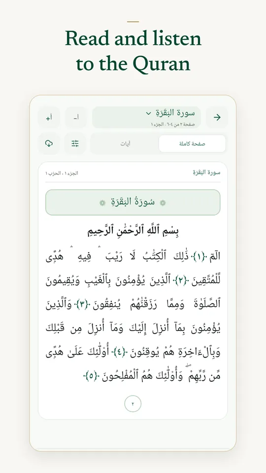
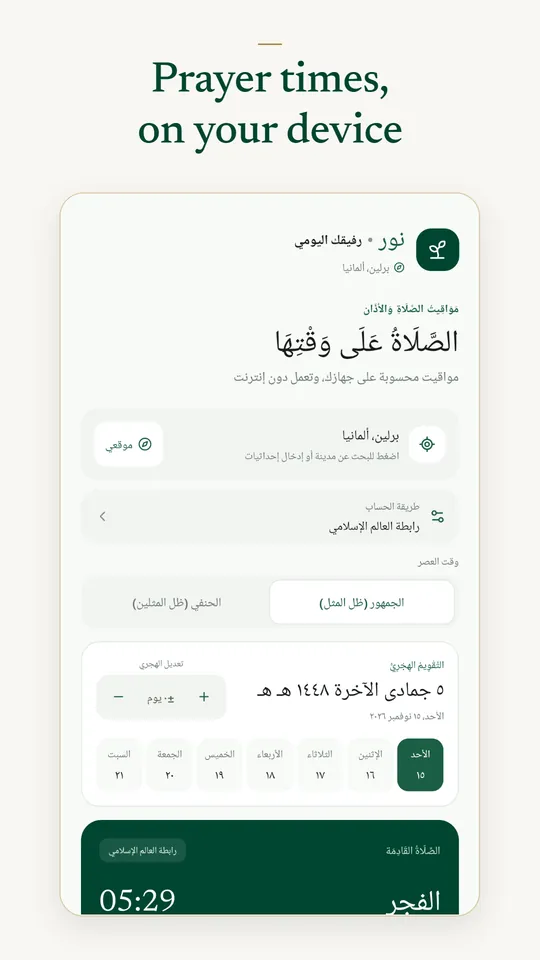
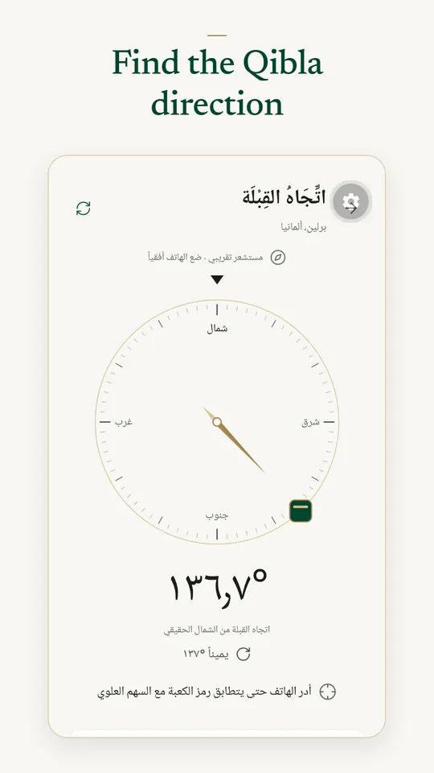
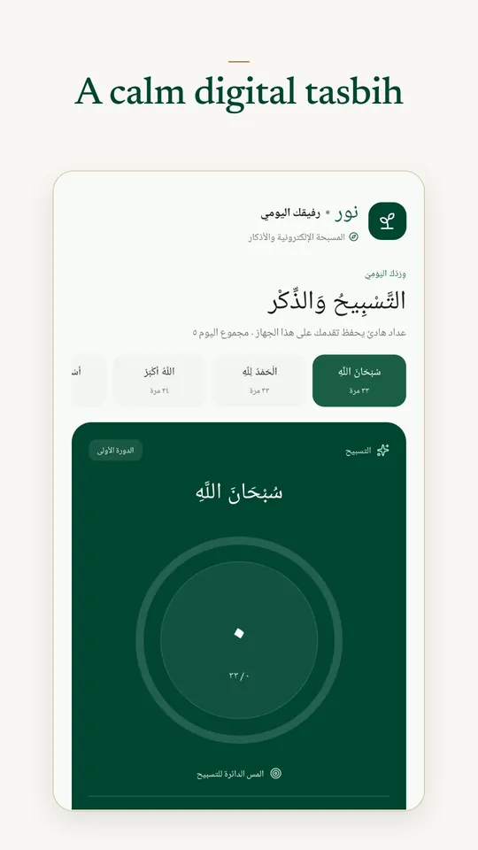
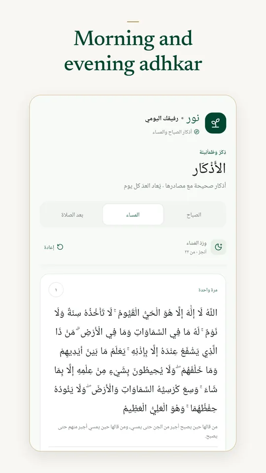
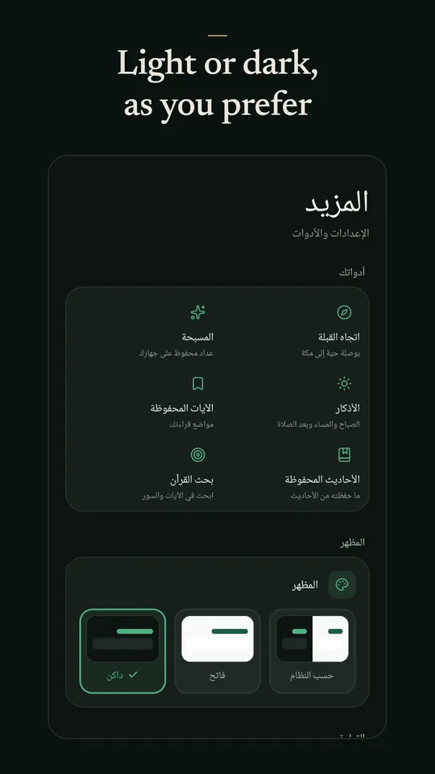

A calm Islamic companion
Quran, prayer times and adhkar, quietly together.
A calm, ad-free Islamic companion. Read and hear the Quran, check prayer times, find the Qibla and keep your adhkar. No account, and your data stays on your device.
The app will be available on both stores soon.

What is in Noor
Everything for your day, in one uncluttered app.
Quran
Read the Uthmani text of all 114 surahs with an optional English translation, search verses, and listen verse by verse with the reciter you choose. Download what you like for offline listening.
Prayer times
Times calculated on your device from your location or a city you choose, with your choice of calculation method and Asr convention, and optional reminders for each prayer.
Qibla compass
A compass that points to the Qibla using your location and your phone’s sensors.
Hadith
The Forty Hadith of Imam al-Nawawi with explanations, plus the collections of al-Bukhari and Muslim. Save hadith to revisit later.
Adhkar and tasbih
Morning, evening and after-prayer adhkar with their sources, and a digital tasbih that moves on to the next dhikr automatically.
Made to be calm
Light, dark or follow-your-device themes, an Arabic-first right-to-left layout, and a choice of Arabic or Western numerals. Bookmarks and reading position are saved on your device.
A look inside





Private by design
No account. No ads. No tracking. Your data stays on your device.
No account
No sign-in and no e-mail address. Open the app and use it.
No ads, no tracking
No analytics, no advertising, and no server of our own.
Location stays on device
Your location is used on your device to calculate prayer times and the Qibla. Prefer not to share it? Pick a city instead.
Local notifications
Prayer reminders are scheduled on your device. There is no push server.
Please note
Prayer times can differ by a few minutes from your local mosque’s timetable, so please confirm with your mosque. Qibla accuracy depends on your phone’s compass calibration. Please verify rulings and hadith gradings with a qualified scholar.
Sources and licences are listed inside the app: More → Sources and thanks.